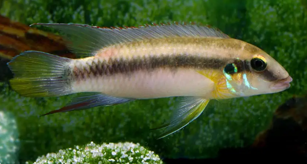
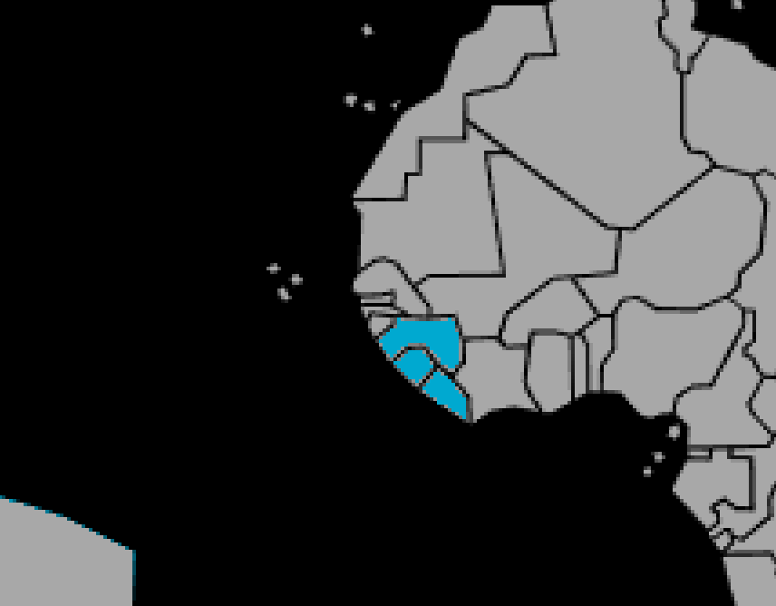

Systématique
- Ordre : Cichliformes
- Famille : Cichlidae
- Genre : Pelvicachromis
- Espèce : P. humilis

Pelvicachromis humilis est un cichlidé fluviatile d'Afrique de l'Ouest. Moins fréquent en aquariophilie que son célèbre cousin P. pulcher, il est considéré comme l'espèce basale du genre.
C'est un poisson au corps allongé et robuste. Les mâles atteignent environ 10 à 12 cm, tandis que les femelles restent plus petites (8 à 9 cm). La coloration varie significativement selon la localité d'origine (populations "Linkou", "Kasewe", etc.), mais le corps est généralement beige à olivâtre avec des barres verticales sombres diffuses.
Cette espèce est appréciée pour le dimorphisme sexuel spectaculaire en période de reproduction, la femelle arborant une zone ventrale rouge-violette très intense.
C'est une espèce benthique (vivant près du fond) et territoriale. Bien que relativement paisible pour un cichlidé, il défend son territoire avec vigueur, surtout en période de reproduction.
Il vit en couple monogame. Il nécessite un aquarium structuré avec de nombreuses cachettes (racines, roches, noix de coco) et une végétation dense pour délimiter les territoires et sécuriser les poissons. Il fouille le substrat à la recherche de nourriture.
Mode : ovipare (pondeur sur substrat caché / cavernicole).
La femelle dépose ses œufs (généralement 50 à 100, moins prolifique que P. pulcher) sur la voûte d'une cavité (grotte, pot en terre).
Les soins sont biparentaux : la femelle reste généralement dans la cavité pour ventiler les œufs et s'occuper des larves, tandis que le mâle patrouille et défend le périmètre extérieur. Les alevins sont surveillés par les parents pendant plusieurs semaines après la nage libre.
Dimorphisme sexuel : Très marqué. Le mâle est plus grand, plus élancé, avec des nageoires impaires (dorsale, anale) se terminant en pointe. La femelle est plus petite, plus ronde, avec des nageoires arrondies et surtout un ventre qui devient rouge cerise ou violet vif lors du frai.
Espérance de vie : Environ 5 à 8 ans en captivité.
Il fréquente les rivières forestières, les ruisseaux et les zones inondées de la Guinée, du Sierra Leone et du Liberia. Les eaux sont généralement douces, acides à neutres, avec un courant faible à modéré et un fond de sable ou de vase.
Répartition

Origine naturelle :
- Afrique de l'Ouest.
- Guinée.
- Sierra Leone.
- Liberia.
Paramètres de maintenance
Température : 24 à 27 °C.
pH : 5,5 à 7,0 (préfère une eau légèrement acide).
GH : 3 à 10 °dGH (eau douce).
Courant : Faible à modéré.
Volume conseillé : Minimum 80 à 100 L pour un couple spécifique. Un volume plus grand est nécessaire pour une maintenance communautaire.
Régime alimentaire
Régime : omnivore à tendance benthophage.
Dans la nature, il consomme des particules, des algues et des petits invertébrés trouvés dans le sédiment.
En aquarium, il accepte les granulés de fond, les paillettes (avec une part végétale), et apprécie particulièrement le vivant et le congelé (daphnies, artémias, vers de vase).